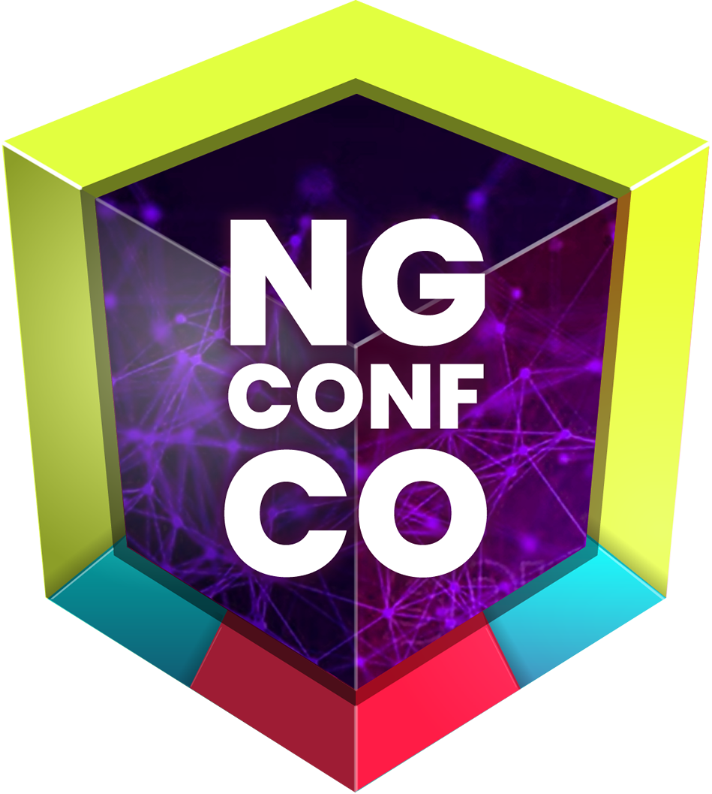

<div class="description">
    <div class="info">
        <span>ABOUT</span>
        <h2>NG-CONF COLOMBIA</h2>
        <p>NgConf Colombia is the first Angular Conference in <strong>Latin America</strong> It gathers a diverse mix top-notch Angular speakers from different countries all around the World. This 2-day event is full advanced workshops, keynotes and talks. Will be carried out in <strong>Medellín, Colombia</strong> at Ruta <i>n</i></p>
        <h3>INTEGRATION</h3>
        <p>This year, the conference is possible thanks to the integration of three different communities in Colombia: <strong>Angular Medellín, NgColombia Bogotá</strong> and <strong>She Codes Angular</strong></p>
    </div>
    
</div>